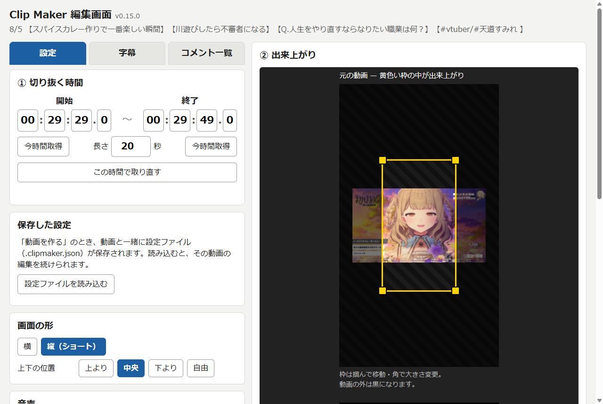

Clip Maker — YouTube 切り抜き
見ている YouTube の場面（最長 60 秒）を、字幕・コメント・隠し四角つきの切り抜き動画にする Chrome 拡張です。横と縦（ショート）に対応。拡張機能だけで mp4 ができます。


できること
- 開始・終了・長さを決めて、字幕・コメント・プレビューを取り込む
- 字幕は YouTube の字幕か、ブラウザ内の音声認識で作る。文は自由に直せる
- コメント（配信アーカイブのチャット）を右から左に流す。載せない設定も可
- 隠したい所を四角で覆う。音あり / 音なし
- 出来上がりを確認してから「動画を作る」。ダウンロードフォルダに mp4 が保存される
入れ方
- zip をダウンロードして展開する
- Chrome で
chrome://extensionsを開き、右上の「デベロッパーモード」を ON にする - 「パッケージ化されていない拡張機能を読み込む」で、展開した中の
extensionフォルダを選ぶ
更新するときは、同じ zip をもう一度ダウンロードして展開し、chrome://extensions の更新ボタンを押してください。Chrome の起動時に「デベロッパーモードの拡張機能を無効にしますか」と出ることがあります。「キャンセル」で使い続けられます。
知っておいてほしいこと
- 切り抜く時間のぶんだけ再生しながら録画します（60 秒の切り抜きは約 60 秒）。録画中は YouTube のタブを表示したままにしてください
- 音声認識を選ぶと、初回だけ認識モデル（数百 MB）をダウンロードします。音声は PC の中だけで処理し、外には送りません
- 切り抜き動画の公開には、元動画の権利者の許諾が必要です。利用はご自身の責任でお願いします
使い方の詳しい説明と更新履歴: GitHub